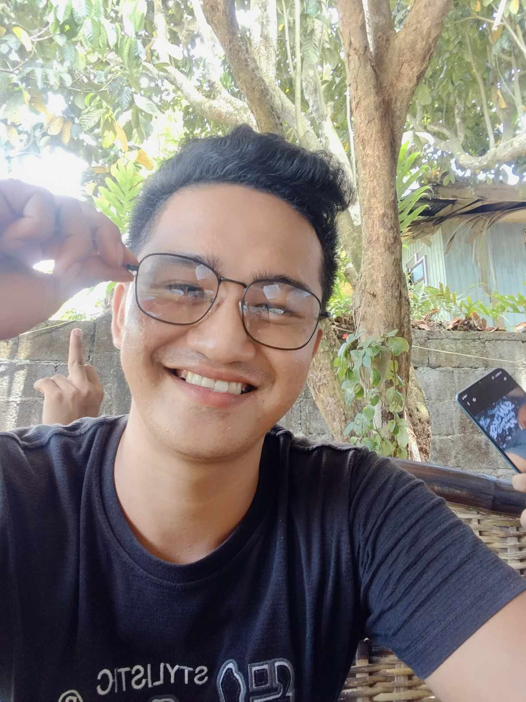

|  |
|
|
|
Title: Personalizing Presence: How Reynold B. Dayoc Infuses his Website with Authenticity
Introduction:
In the digital age, a personal website serves as a virtual canvas where individuals paint the portrait of their identity, aspirations, and experiences. For Reynold B. Dayoc, a 20-year-old resident of Mahayag, Zamboanga del Sur, the decision to incorporate his own photo into his website is more than just a visual choice; it's a deliberate step towards authenticity and connection. In this exploration, we delve into the ways Reynold uses his own image to create a personal touch and forge a genuine connection with visitors to his website.
1. A Face to the Name:
In a world filled with virtual interactions, putting a face to the name can humanize the digital experience. Reynold recognizes the power of personal connection, and by prominently featuring his own photo on his website, he offers visitors a glimpse into the person behind the content. This simple yet powerful gesture transforms the digital space into a more personal and relatable environment.
2. Establishing Authenticity:
In an era where authenticity is highly valued, Reynold's decision to showcase his own photo on his website is a statement of transparency. Authenticity fosters trust, and visitors to his website can see the person they are engaging with, adding a layer of genuineness to the online interaction. This transparency becomes a bridge that connects Reynold to his audience in a way that goes beyond the digital facade.
3. Personal Branding:
A personal website often serves as a platform for personal branding, and the inclusion of Reynold's photo becomes a crucial element in shaping that brand. The photo becomes a visual representation of his identity, values, and the persona he wishes to convey to his audience. It adds a human touch to his digital presence, making the website an extension of himself.
4. Creating a Memorable Impression:
First impressions matter, even in the virtual realm. By featuring his own photo prominently, Reynold ensures that visitors to his website encounter a memorable and impactful first impression. The image becomes a visual signature, leaving a lasting mark on the minds of those who explore his digital space.
5. Connecting on a Personal Level:
Beyond the information presented on the website, Reynold's photo facilitates a personal connection. Visitors can see the person behind the words and accomplishments, fostering a sense of familiarity. This connection extends beyond the screen, creating an immersive experience that goes beyond the digital divide.
Conclusion:
In the digital landscape where pixels and codes dominate, Reynold B. Dayoc's decision to use his own photo on his website is a deliberate act of personalization. It is a declaration of authenticity, a step towards creating genuine connections, and a visual representation of the person he is. By infusing his website with his own image, Reynold opens a door to a more personal and engaging online experience, where the digital and the personal seamlessly intertwine. In this visual journey, Reynold invites visitors not only to explore his content but also to embark on a genuine connection with the person behind the pixels.